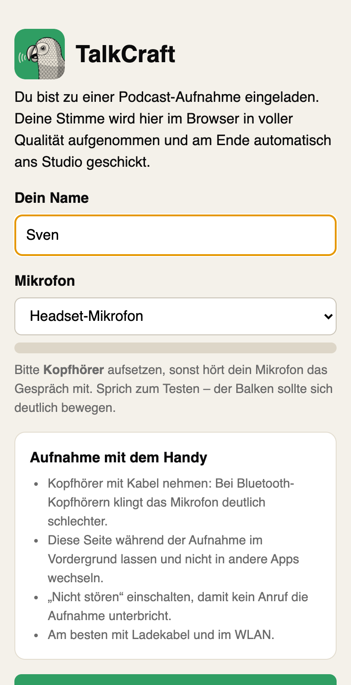
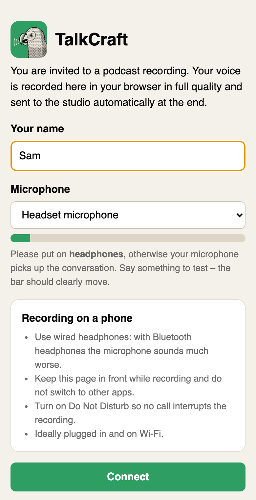

So arbeitest du mit TalkCraftWorking with TalkCraft
Vom leeren Projekt bis zur veröffentlichten Folge, Schritt für Schritt. Die Animationen zeigen die echte App; ein Klick darauf hält sie an.From an empty project to a published episode, step by step. The animations show the real app; click one to pause it.
Tastenkürzel stehen für den Mac; unter Windows und Linux nimmst du Strg statt Cmd. Die Bilder zeigen das Menü im Fenster, wie unter Windows und Linux; auf dem Mac stehen dieselben Menüs oben in der Menüleiste.Shortcuts are given for the Mac; on Windows and Linux use Ctrl instead of Cmd. The pictures show the menu inside the window, as on Windows and Linux; on the Mac the same menus are in the menu bar at the top.
1Folge anlegenSet up an episode
Eine neue Folge
A new episode
Die Podcast-Vorlage gibt jeder Stimme ihre eigene Spur. So lässt sich später jeder Sprecher für sich schneiden und im Klang anpassen.
The podcast template gives every voice a track of its own, so each speaker can be cut and adjusted separately later.
Ablage › Neue Session … (Cmd+N) öffnet den Dialog.
Namen eingeben, Podcast-Folge wählen und die Zahl der Sprecher einstellen. 48 kHz passt fast immer.
Anlegen: Jeder Sprecher bekommt eine Spur mit fertiger Stimmkette (EQ, Gate, Kompressor, De-Esser), dazu eine Spur für Jingles und Musik und einen Master, der bei −1 dBTP begrenzt.
Später noch jemand dazu? + unter der Spurliste fügt einen weiteren Sprecher hinzu.
File › New Session… (Cmd+N) opens the dialog.
Enter a name, pick Podcast episode and set the number of speakers. 48 kHz suits almost everything.
Create: every speaker gets a track with a ready voice chain (EQ, gate, compressor, de-esser), plus a track for jingles and music and a master limited at −1 dBTP.
Someone joins later? + below the track list adds another speaker.
Arbeitsmodi: Beim Start fragt TalkCraft, ob du aufnehmen, schneiden oder veröffentlichen willst, und zeigt nur die Werkzeuge dafür. Umschalten geht jederzeit links in der Werkzeugleiste.
Work modes: at start TalkCraft asks whether you want to record, edit or publish and shows just the tools for that. Switch any time on the left of the toolbar.
Mikrofone einrichten
Set up the microphones
Einmal pro Studio-Aufbau: TalkCraft findet heraus, welches Mikrofon an welchem Eingang hängt, und sagt dir, ob der Pegel stimmt.
Once per studio setup: TalkCraft finds out which microphone is on which input and tells you whether the level is right.
Einstellungen › Audio-Interface öffnen und oben das Interface für Mikrofone (Eingang) und Kopfhörer (Ausgang) wählen.
Bei jedem Sprecher Erkennen klicken und ihn drei Sekunden sprechen lassen: TalkCraft ordnet seiner Spur den richtigen Eingang zu. Sitzen alle der Reihe nach an Eingang 1, 2, 3 …, genügt Der Reihe nach zuordnen.
Soundcheck › Starten (10 s): Alle sprechen ganz normal. Danach steht bei jedem Mikrofon, ob der Gain am Interface hoch oder runter muss. Gut sind Spitzen um −12 dBFS.
Zum Mithören die Direktüberwachung (Direct Monitoring) des Interfaces nutzen: Sie hat keine Verzögerung.
Open Setup › Audio Interface and pick the interface for the microphones (input) and headphones (output) at the top.
Click Detect next to each speaker and let them talk for three seconds: TalkCraft gives their track the right input. If everyone sits on inputs 1, 2, 3 … in order, Assign in order is enough.
Soundcheck › Start (10 s): everyone talks normally. Afterwards each microphone says whether the gain on the interface should go up or down. Peaks around −12 dBFS are good.
To listen while recording, use the interface's direct monitoring: it has no delay.
Interface abgezogen? Dann beendet TalkCraft eine laufende Aufnahme sauber und behält alles bis dahin. Wird es wieder eingesteckt, nimmt TalkCraft es von selbst wieder.
Interface unplugged? TalkCraft ends a running take cleanly and keeps everything so far. Plug it back in and TalkCraft picks it up again.
2AufnehmenRecord
Ferngäste einladen
Invite remote guests
Gäste brauchen nur einen Browser und Kopfhörer, auch das Handy reicht. Ihre Stimme wird bei ihnen in voller Qualität aufgenommen, nicht die Leitung.
Guests only need a browser and headphones; a phone will do. Their voice is recorded at full quality on their side, not the call.


So sieht es beim Gast ausWhat the guest sees
Fenster › Ferngäste und dort Studio öffnen: Im Browser öffnet sich die Studio-Seite mit dem Einladungslink.
Den Link an die Gäste schicken. Sie öffnen ihn, tragen ihren Namen ein, erlauben das Mikrofon und treten bei.
Jeder Gast erscheint als eigene Spur „Ferngast – Name“ mit Live-Pegel. M auf der Spur schaltet ihn im Gespräch stumm.
Record startet auch bei jedem Gast die Aufnahme. Nach Stop kommt seine Datei von selbst und liegt passend zum Gespräch auf seiner Spur.
Window › Remote Guests, then Open Studio: the studio page opens in your browser with the invitation link.
Send the link to your guests. They open it, enter their name, allow the microphone and join.
Each guest shows up as a track of their own, “Ferngast – name”, with a live meter. M on the track mutes them in the call.
Record starts the recording at every guest as well. After Stop their file arrives by itself and lands in sync on their track.
Gast im Firmennetz? Dort ist die direkte Verbindung oft gesperrt. Unter Ausweich-Server im Fenster Ferngäste lässt sich ein eigener TURN-Server eintragen; die Gästeseite wechselt nach 12 Sekunden ohne Verbindung dorthin.
Guest on a company network? Direct connections are often blocked there. Under Fallback server in the Remote Guests window you can enter a TURN server of your own; the guest page switches to it after 12 seconds without a connection.
Die Aufnahme
The recording
Alles, was du während des Gesprächs brauchst, liegt griffbereit: der Ablaufplan, die Jingles und zwei Knöpfe für Kapitel und Versprecher.
Everything you need during the talk is at hand: the run sheet, the jingles and two buttons for chapters and slips.
Im Modus Aufnehmen zeigt die Ampel Startklar, ob jedes Mikrofon Signal hat, nichts übersteuert und genug Speicher frei ist.
Fenster › Ablaufplan: die Themen mit geplanten Minuten. Nächstes Thema (oder Tab) setzt ein Kapitel mit dem Namen des Themas und zeigt, wie lange es schon läuft.
Fenster › Jingles: Ein Klick auf ein Pad oder die Tasten 1–8 spielt das Jingle ab, live in die Aufnahme und für die Gäste hörbar.
Record (Cmd+Leertaste) nimmt alle Sprecherspuren auf. + Kapitel (Enter) setzt einen Kapitelmarker, Fehler (Umschalt+Enter) einen roten Marker für einen Versprecher. Einfach weiterreden; geschnitten wird später.
In Record mode the Ready light shows whether every microphone has a signal, nothing clips and there is enough disk space.
Window › Run Sheet: the topics with their planned minutes. Next topic (or Tab) sets a chapter named after the topic and shows how long it has been running.
Window › Jingles: a click on a pad or the keys 1–8 plays the jingle, live into the recording and audible to the guests.
Record (Cmd+Space) records every speaker track. + Chapter (Enter) sets a chapter marker, Mistake (Shift+Enter) a red marker for a slip. Just keep talking; cutting comes later.
Zweiter Bildschirm: Jingles, Ablaufplan und Ferngäste lassen sich mit Eigenes Fenster herauslösen, etwa auf einen Touchscreen. Unter Fenster › Fernbedienung wird ein Handy im selben WLAN per QR-Code zur Fernbedienung.
Second screen: jingles, run sheet and remote guests detach with Own window, onto a touchscreen for example. Window › Remote Control turns a phone on the same Wi-Fi into a remote via a QR code.
3Schneiden und aufbereitenEdit and polish
Versprecher herausschneiden
Cut out the slips
Die roten Marker aus der Aufnahme führen dich von Stelle zu Stelle. Jeder Schnitt wirkt auf alle Spuren, damit die Sprecher synchron bleiben.
The red markers from the recording lead you from spot to spot. Each cut works on every track, so the speakers stay in sync.
In den Modus Schneiden wechseln. In der Werkzeugleiste steht, wie viele Fehler noch offen sind.
Der Pfeil nach rechts springt zum nächsten Fehler, der Pfeil nach links zum vorigen.
Den Versprecher auswählen (ziehen, oder I und O an der Abspielposition) und mit Entf löschen: Die Lücke schließt sich auf allen Spuren, jeder Schnitt bekommt eine kurze Blende.
Bleibt die Stelle doch drin, hakt der Haken den Marker ab.
Switch to Edit mode. The toolbar shows how many mistakes are still open.
The right arrow jumps to the next mistake, the left arrow to the previous one.
Select the slip (drag, or I and O at the playhead) and press Delete: the gap closes on every track, and each cut gets a short fade.
Keeping it after all? The tick removes the marker.
Zum Abhören:J, K und L spulen zurück, halten an und spielen ab (zweimal L für 1,5-fach). Die Geschwindigkeit in der Werkzeugleiste geht von 0,5× bis 2×, die Stimmen behalten ihre Tonhöhe.
Listening:J, K and L rewind, stop and play (press L twice for 1.5×). The speed in the toolbar goes from 0.5× to 2×, and the voices keep their pitch.
Lange Pausen kürzen
Shorten long pauses
Nachdenkpausen klingen in der fertigen Folge oft länger als im Gespräch. TalkCraft kürzt sie alle auf einmal, nur dort, wo wirklich niemand spricht.
Pauses to think often sound longer in the finished episode than in the talk. TalkCraft shortens them all at once, only where nobody is speaking.
Bearbeiten › Pausen kürzen …
Einstellen, was als Stille zählt (unter wie viel dB), ab welcher Länge eine Pause gekürzt wird und auf wie lang.
Vorschau zählt die Stellen, ohne etwas zu ändern. Kürzen schneidet sie auf allen Spuren; Marker und Untertitel rücken mit.
Edit › Shorten Pauses…
Set what counts as silence (below how many dB), from which length a pause is shortened, and to how long.
Preview counts the spots without changing anything. Shorten cuts them on every track; markers and subtitles move along.
Schnitt am Text
Edit by text
Das Gespräch als Text, mit jedem Wort an seiner Zeit. „Ähm“, „äh“ und Co. sind markiert und lassen sich mit einem Klick herausschneiden.
The talk as text, every word at its time. “Um”, “uh” and the like are marked and can be cut out in one click.
Fenster › Schnitt am Text und Wörter finden: TalkCraft hört die Folge auf deinem Rechner Wort für Wort durch. Beim ersten Mal lädt es dafür einmalig ein Sprachmodell.
Alle Füllwörter auswählen, oder einzelne Wörter anklicken; Umschalt-Klick wählt einen Bereich. Ein Rechtsklick spielt ein Wort ab.
… Wörter schneiden (oder Entf) entfernt sie aus allen Spuren, als ein einziger Rückgängig-Schritt.
Window › Edit by Text, then Find Words: TalkCraft listens to the episode word by word on your computer. The first time it downloads a speech model once.
Select all fillers, or click single words; Shift-click selects a range. A right-click plays a word.
Cut … word(s) (or Delete) removes them from every track, as a single undo step.
Für Social Media: Die besten Sätze markieren und Zitat-Clip … wählen: Daraus wird ein kurzes Video im Hochformat für Instagram, TikTok und Co.
For social media: select the best sentences and choose Quote Clip…: they become a short portrait video for Instagram, TikTok and the like.
Folge fertig machen
Finish Episode
Die üblichen Schlussschritte für den Klang in einem Durchgang. Jeder lässt sich abwählen, und mit Vorher und Nachher hörst du den Unterschied.
The usual final steps for the sound in one go. Each one can be left out, and Before and After let you hear the difference.
Bearbeiten › Folge fertig machen …
Häkchen setzen: Übersprechen entfernen, jeden Sprecher in sich ausgleichen, Sprecher aneinander angleichen, Atmer absenken, Mundgeräusche reparieren, Füllwörter schneiden, Pausen kürzen, Musik unter Sprache absenken, Rauschen mindern.
Folge fertig machen klicken. Danach mit Vorher und Nachher vergleichen, oder Alles zurücknehmen.
Edit › Finish Episode…
Tick what you want: remove crosstalk, level each speaker within their track, match the speakers, lower breaths, repair mouth clicks, cut filler words, shorten pauses, duck music under speech, reduce noise.
Click Finish Episode. Then compare Before and After, or Undo All.
4VeröffentlichenPublish
Untertitel und Transkript
Subtitles and transcript
Untertitel machen die Folge durchsuchbar und barrierefrei. Die Transkription läuft auf deinem Rechner, die Aufnahme verlässt ihn dafür nicht.
Subtitles make the episode searchable and accessible. Transcription runs on your computer; the recording never leaves it for that.
Fenster › Untertitel (Cmd+Ctrl+T). Beim ersten Mal Sprachmodell laden (rund 570 MB, einmalig).
Transkribieren füllt die Untertitel aus der Sprache, mit dem Namen des Sprechers. Jeder Text lässt sich direkt bearbeiten.
Exportieren … schreibt SRT oder WebVTT, Als Text exportieren … das Transkript. Kapitel vorschlagen … sucht Kapitelgrenzen an langen Pausen und Sprecherwechseln.
Window › Subtitles (Cmd+Ctrl+T). The first time, Download speech model (about 570 MB, once).
Transcribe fills in the subtitles from the speech, with the speaker's name. Every text can be edited right there.
Export… writes SRT or WebVTT, Export Text… the transcript. Suggest Chapters… looks for chapter breaks at long pauses and speaker changes.
Exportieren
Export
Eine Datei, die jede Podcast-App versteht: mit Kapiteln, Cover und der Lautheit, die Apple und Spotify erwarten.
A file every podcast app understands: with chapters, cover and the loudness Apple and Spotify expect.
Ablage › Folge exportieren … (Cmd+Alt+E).
Format wählen: M4A (Standard), MP3 oder M4B für Hörbücher. Die Lautheit steht auf −16 LUFS, dem Stereo-Standard der Plattformen.
Titel, Podcast, Autor, Folgennummer und ein quadratisches Cover eintragen; die Marker werden zu Kapiteln. Shownotes mit Kapitelliste und die Untertitel entstehen gleich mit.
File › Export Episode… (Cmd+Alt+E).
Pick the format: M4A (default), MP3, or M4B for audiobooks. Loudness is set to −16 LUFS, the platforms' stereo standard.
Enter title, podcast, author, episode number and a square cover; the markers become chapters. Show notes with a chapter list and the subtitles come along.
Veröffentlichen
Publish
Die Checkliste sagt, was noch fehlt. Dann geht die Folge mit einem Klick in deinen eigenen Feed oder zu deinem Podcast-Hoster.
The checklist says what is missing. Then one click sends the episode to your own feed or to your podcast host.
Den Modus Veröffentlichen wählen oder Ablage › Folge veröffentlichen …
Die Checkliste prüft Titel, Beschreibung, Cover (quadratisch, 1400 bis 3000 Pixel), Kapitel, offene Fehler-Marker, Lautheit, Länge und Transkript.
Unter Wohin das Ziel wählen: der eigene RSS-Feed (per Git, SFTP, FTP oder WebDAV; den Feed einmal bei Apple Podcasts und Spotify einreichen) oder ein Hoster wie Buzzsprout, Transistor, Podigee, Podbean, Spreaker, Captivate oder RSS.com.
Exportieren und veröffentlichen. Deine Zugangsdaten bleiben in deinem Einstellungsordner auf diesem Rechner.
Pick the Publish mode, or File › Publish Episode…
The checklist checks title, description, cover (square, 1400 to 3000 pixels), chapters, open mistake markers, loudness, length and transcript.
Under Where to pick the target: your own RSS feed (via Git, SFTP, FTP or WebDAV; submit the feed to Apple Podcasts and Spotify once) or a host such as Buzzsprout, Transistor, Podigee, Podbean, Spreaker, Captivate or RSS.com.
Export and Publish. Your keys stay in your settings folder on this computer.
Für Social Media:Social-Paket erstellen legt Beitragstext, Kapitel, Cover und Shownotes in einen Ordner; Audiogramm (MP4) … macht ein Video mit Wellenform und Untertiteln.
For social media:Make social package puts post text, chapters, cover and show notes in one folder; Audiogram (MP4)… makes a video with waveform and subtitles.
 TalkCraft
TalkCraft